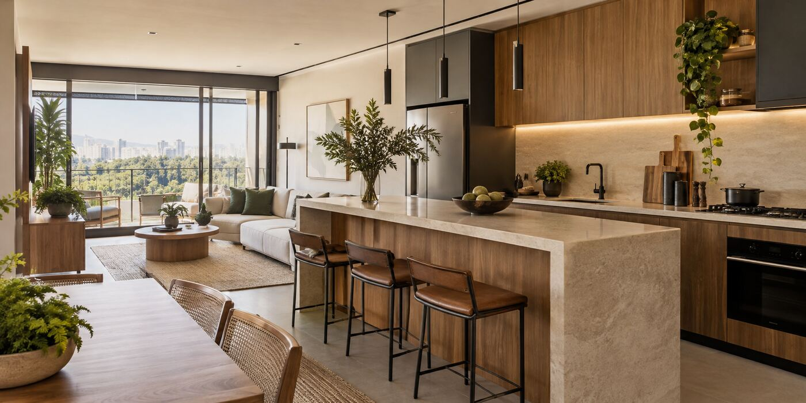

Reformas e transformação
Demolição e preparação de ambientes para dar lugar a uma nova configuração.
REFORMAS EM CURITIBA E REGIÃO
Da mudança que você imagina aos detalhes da execução. Mão de obra e acompanhamento técnico para transformar seu imóvel.
Conte o que você quer reformar
01 / O QUE FAZEMOS
Pequenas mudanças ou uma transformação completa: comece pelo que seu espaço precisa.
Veja os trabalhos no Instagram ↗Demolição e preparação de ambientes para dar lugar a uma nova configuração.
Assentamento de porcelanato e pintura para renovar a identidade do seu imóvel.
Serviços de elétrica e hidráulica integrados às necessidades da sua reforma.
02 / COMO COMEÇAR
O primeiro passo é entender o que você deseja mudar.
Compartilhe o tipo de reforma, a localização e o que você espera do novo espaço.
Alinhe as necessidades do imóvel e a avaliação necessária para definir o escopo.
Com as informações em mãos, combine orçamento, condições e planejamento da execução.
03 / SEU PRÓXIMO PROJETO
Organize as informações da sua reforma em uma mensagem simples.
Neste protótipo, você pode testar o pedido. Nenhuma informação é enviada à empresa.